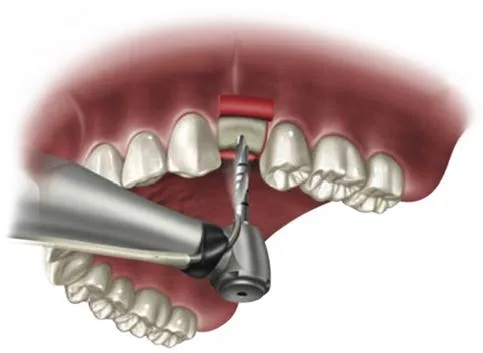
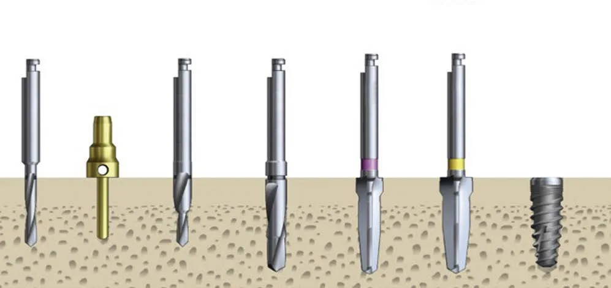

نسخه استخراجشده؛ ترجمه یا تأیید علمی انجام نشده است. وضعیت: captured
در بیشتر سیستمهای جراحی، متهی اول یک متهی پایلوت با قطر تقریبی ۱٫۵ میلیمتر است. و این مته مهمترین متهی کل توالی است — نه بهدلیل اندازهاش، بلکه بهدلیل زمانش. برای همین متهی پایلوت معمولاً تا عمق نهایی نمیرود (حدود ۷ تا ۹ میلیمتر) تا اگر لازم شد، اصلاح جهت آسانتر باشد.
پس از متهی پایلوت، یک پین موازی در استئوتومی قرار میگیرد تا موقعیت بالینی و رادیوگرافیک بررسی شود. این تنها نقطهای است که میتوانی مسیر را ببینی و هنوز ارزان اصلاحش کنی.
اصلاح مسیر. اگر موقعیت درست نبود و مسیر اصلاح شد، استئوتومی جدید باید ۱ تا ۲ میلیمتر عمیقتر از عمق استئوتومی اولیه برده شود. دلیلش مکانیکی است: اگر عمق یکسان بماند، متهی بعدی به مسیر قدیمی سُر میخورد و اصلاح باطل میشود.
قاعدهی این درس: هرچه در توالی جلوتر بروی، اصلاح گرانتر میشود. در مرحلهی پایلوت، اصلاح یعنی چند ثانیه دریل بیشتر؛ پس از قطرهای بزرگتر، اصلاح ممکن است اصلاً ممکن نباشد.

متهی استخوان کرستال. کرست مدول بیشتر ایمپلنتها از بدنه پهنتر است. اگر ایمپلنتی با کرست مدول پهنتر بدون متهی کانترسینک در کورتیکال متراکم D1 وارد شود، استخوان کرستال را فشرده میکند — و این فشار در ناحیهای که بیشترین تنش را دارد، به نکروز فشاری و تحلیل کرستال میانجامد. در یک مطالعه، کنار گذاشتن متهی کرستال پس از ۳ ماه حدود ۱٫۵ میلیمتر تحلیل کرستال بیشتر ساخت.
پس در D1 (و برای بیشتر طرحها در D2) متهی کرستال تجمل نیست: قطر بزرگتر را در بالای استئوتومی آماده میکند تا کرست مدول بدون فشردن استخوان بنشیند. در D3 و D4 ماجرا برعکس است: متهی کرستال به کار نمیرود، چون فشرده شدن کورتیکال نازک کرست به کرست مدول، ثبات اولیه را بیشتر میکند.
کنترل جهت هنگام کاشت. نکتهای که کمتر گفته میشود: دست محکم هنگام قرار دادن ایمپلنت با هندپیس، از رانده شدن ایمپلنت به سمت فاسیال — و دور شدن از صفحهی کورتیکال ضخیمتر لینگوال — جلوگیری میکند. یعنی حتی در آخرین لحظه، استخوان میتواند مسیر ایمپلنت را منحرف کند.
اباتمنت هیلینگ. پس از کاشت، اباتمنت هیلینگ درون ایمپلنت قرار میگیرد تا ترمیم ایدهآل بافت نرم ممکن شود. و مزیت مهمش این است که اگر ایمپلنت بالای بافت نرم ترمیم شود، جراحی مرحلهی دوم حذف میشود.
و شرط این انتخاب: پروتکل تکمرحلهای وقتی اندیکاسیون دارد که ثبات اولیه عالی باشد. یعنی این تصمیم را استخوان میگیرد، نه برنامهی زمانی بیمار.

نوع سؤال: ساخت کلمه · 5 خانه
حروف منبع: ل · ا · ح · ا · ص